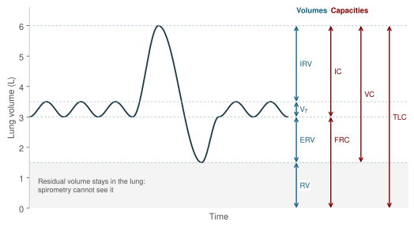
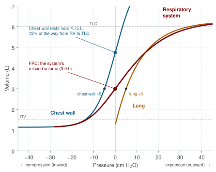
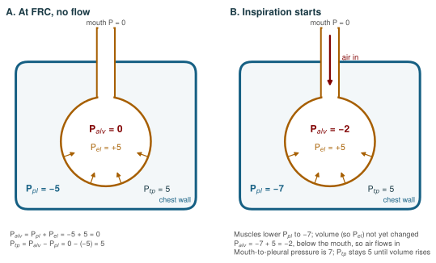
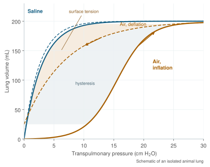
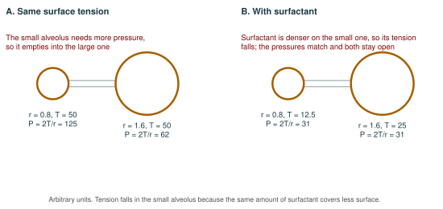
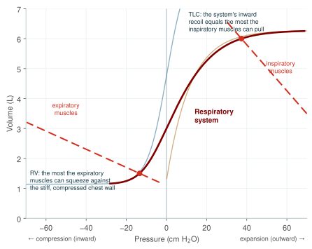
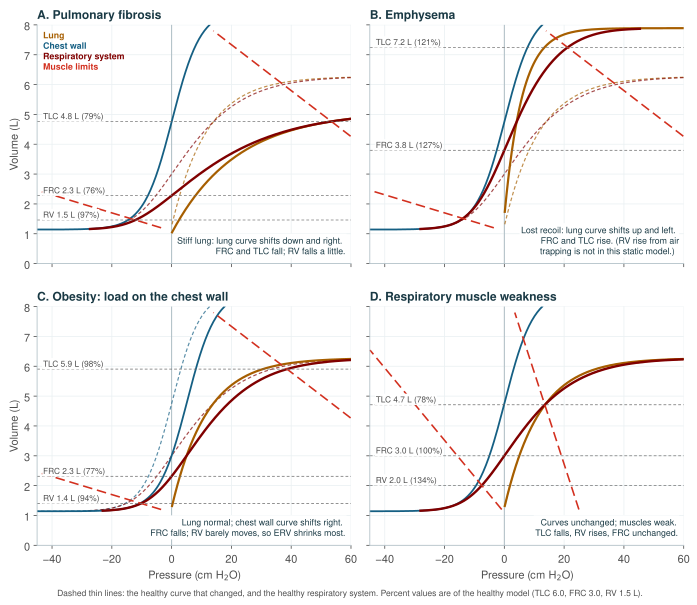

20 Respiratory Statics
Lung volumes and the forces that set them
- Name the lung volumes and capacities, and say which ones spirometry cannot measure.
- Explain how a body box measures FRC.
- Draw the pressure-volume curves of the lung, the chest wall, and the respiratory system, and find FRC, TLC and RV on them.
- Use Palv, Ppl, Ptp and Pel to explain why air flows in when pleural pressure falls.
- Explain how surface tension and surfactant set the lung’s elastic recoil.
- Decide whether a problem lies in the lung, the chest wall or the muscles, and predict how TLC, FRC and RV change.
Names, dates and the exact values in figure captions are context, not things to memorize.
As the introduction set out, the lungs have two jobs, ventilation (moving CO2 out) and oxygenation (getting O2 into the blood). Both depend on moving air in and out, and that depends on mechanics. Statics is the part of mechanics that deals with the respiratory system when nothing is moving: the forces that hold the lungs at a given volume when the airway is open and air is not flowing. Dynamics, the next chapter, adds airflow and airway resistance.
20.1 Lung volumes and capacities
A volume is a single, non-overlapping slice of the lung’s air. A capacity is the sum of two or more volumes. Figure 20.1 shows them on a spirometer tracing.

| Volume | What it is | Typical (L) |
|---|---|---|
| Tidal volume (VT) | Air moved in or out in a quiet breath | 0.5 |
| Inspiratory reserve volume (IRV) | Extra air you can breathe in after a normal inspiration | 2.5 |
| Expiratory reserve volume (ERV) | Extra air you can breathe out after a normal, passive expiration | 1.5 |
| Residual volume (RV) | Air still in the lungs after a maximal expiration | 1.5 |
| Capacity | Made of | Typical (L) |
|---|---|---|
| Inspiratory capacity (IC) | VT + IRV | 3.0 |
| Functional residual capacity (FRC) | ERV + RV | 3.0 |
| Vital capacity (VC) | IRV + VT + ERV | 4.5 |
| Total lung capacity (TLC) | All four volumes, or FRC + IC | 6.0 |
FRC is the volume at the end of a quiet expiration, when the respiratory muscles are relaxed. It is the starting point for every quiet breath, and most of this chapter is about why it sits where it does.
Volumes scale with body size, age and sex. Hutchinson, who built the first practical spirometer, showed in 1846 that vital capacity rises with height [2]. A patient’s measured values are compared with predicted values from reference equations and reported as percent predicted.
20.1.1 What spirometry can and cannot measure
A spirometer measures air that moves through the mouth. Older spirometers collected exhaled air in a bell floating in water. Most modern ones measure flow, with a pneumotachograph or a turbine or ultrasonic sensor, and integrate it to get volume.
Either way, a spirometer can only measure air that comes out. RV never leaves the lung, so spirometry cannot measure RV, and it cannot measure any capacity that contains RV: FRC and TLC. Spirometry gives VT, IRV, ERV, IC and VC. To get the rest, you need one more number, and the usual one is FRC. It is measured at the end of a quiet breath, which takes no effort, so it is the most reproducible starting point. Once FRC is known, RV = FRC − ERV and TLC = FRC + IC. A full set of pulmonary function tests is three tests: spirometry, lung volumes (usually by body box) and the diffusing capacity, which a later chapter covers.
20.1.2 Measuring FRC with a body box
In body box plethysmography the patient sits in a sealed, transparent box and breathes through a mouthpiece [3, 4]. At the end of a quiet expiration (at FRC), a shutter closes the mouthpiece and the patient makes small panting efforts against it. No air enters or leaves the lungs, so the lung gas is simply compressed and decompressed.
Boyle’s law says that for a fixed amount of gas at constant temperature, P1V1 = P2V2. Here the pressures must be absolute pressures, not pressures relative to the atmosphere. For the gas in the lungs:
- Before the effort: P1 is barometric pressure, Patm (strictly, barometric pressure minus water vapor pressure), and V1 = FRC, the unknown.
- During an effort to breathe in: the chest enlarges by a small ΔV, so the lung gas expands and its pressure, measured at the mouth, changes by ΔP (it falls, so ΔP is negative).
So Patm × FRC = (Patm + ΔP)(FRC + ΔV). Multiplying out, dropping the tiny ΔP × ΔV term, and solving:
\[\text{FRC} = -\frac{\Delta V}{\Delta P}\,P_{atm}\]
ΔP comes from the mouthpiece gauge. ΔV comes from the box: when the chest enlarges, it squeezes the gas in the box, and the rise in box pressure is calibrated to volume. On the outward pant everything runs in reverse: the lung gas is compressed, the patient gets smaller and box pressure falls. The lecture slide shows that pant, and the arithmetic comes out the same.
You will not be asked to do the body box calculation. Know that spirometry cannot measure RV, FRC or TLC, that the body box measures FRC using Boyle’s law, and that once you have FRC, spirometry gives you everything else.
FRC or TLC can also be measured by having the patient breathe a known amount of an inert gas such as helium. The gas mixes into the lung air, and its fall in concentration gives the volume it mixed into (C1V1 = C2V2). Dilution only counts gas that is in contact with the open airways. In obstructive disease some gas is trapped behind closed or narrowed airways, so dilution underestimates lung volume. The body box compresses all the gas in the chest, so it counts trapped gas that dilution misses.
20.2 Pressures, units, and transmural pressure
Respiratory pressures are small, so they are measured in centimeters of water. One cm H2O is the pressure that holds up a 1 cm column of water. It is about 0.74 mm Hg (1 mm Hg ≈ 1.36 cm H2O). From here on, all pressures are relative to atmospheric pressure, so “0” means atmospheric and “−5” means 5 cm H2O below it.
What matters for any elastic structure is the pressure difference across its wall, the transmural pressure:
\[P_{tm} = P_{in} - P_{out}\]
A positive transmural pressure pushes the wall outward and distends the structure. The lung, the chest wall and the airways each have one, and it is the transmural pressure, not the absolute pressure on either side, that sets their volume. In the dynamics chapters, Ptm is used for the airway wall: airway pressure minus pleural pressure.
20.3 Pressure-volume curves
The best way to see what holds the lungs at a given volume is to plot volume against the pressure needed to hold each structure at that volume with its muscles relaxed. Figure 20.2 shows the three curves the course uses (the small-group keys call them compliance curves). On these plots, pressure to the right of zero means the structure is being held expanded against its tendency to shrink, and pressure to the left means it is being held compressed against its tendency to spring out.

The chest wall wants to be big. The relaxed chest wall rests at about 4.75 L, 72% of the way from RV to TLC [5]. Below that volume it recoils outward, and above it, it recoils inward. That is a property of its anatomy: ribs, cartilage and muscle that have been sprung inward. The diaphragm and the abdomen below it count as part of the chest wall.
The lung wants to be small. At zero transpulmonary pressure, a lung removed from the chest shrinks to a small “minimal volume,” below RV. It never empties completely, because its small airways pinch shut at low volume and trap some gas. At every volume in the chest it recoils inward, and the recoil grows as it is stretched. A later section explains where the recoil comes from.
The pleural space links them. The lung and chest wall are not attached to each other. They are coupled by the thin, sealed film of fluid in the pleural space. When one moves, it pulls the other with it, so they always share the same volume. At FRC, the lung pulls inward with 5 cm H2O and the chest wall pulls outward with 5 cm H2O. The two pulls make the pleural pressure negative: about −5 cm H2O at FRC. That is an average. In an upright person it is more negative at the apex and less negative at the base, which matters in the ventilation-perfusion chapter.
A pneumothorax shows what happens when the seal breaks. Air enters the pleural space, pleural pressure rises to atmospheric, and each structure goes its own way: the lung collapses toward its minimal volume and the chest wall springs outward.
The respiratory system curve is the lung and chest wall together, which is what you feel as a whole person. Because they share one volume, their pressures add at each volume: the system’s pressure is the lung’s recoil pressure plus the chest wall’s. Below the chest wall’s resting volume, the chest wall springs outward and helps, so the system needs less pressure than the lung alone and its curve lies to the left of the lung curve. Above it, the chest wall also has to be stretched, so the system needs more pressure than the lung alone and its curve crosses to the right. In Figure 20.2 the crossing is near 4.75 L.
FRC is where the system’s pressure is zero: the volume where the lung’s inward recoil and the chest wall’s outward recoil cancel, with no muscle effort. The course calls FRC “the Pms of the respiratory system”: like mean systemic filling pressure in the circulation, it is the state the system settles into when nothing is driving it.
20.4 The single-alveolus model
Treat the whole lung as one balloon (the alveolus) inside a box (the chest wall), connected to the mouth by one airway (Figure 20.3). Four pressures describe it.
| Symbol | Name | Meaning |
|---|---|---|
| Palv | Alveolar pressure | Pressure of the gas inside the alveoli. Written PA on the lecture slides. |
| Ppl | Pleural pressure | Pressure in the pleural space, just outside the lung |
| Ptp | Transpulmonary pressure | The lung’s transmural pressure: Ptp = Palv − Ppl |
| Pel | Elastic recoil pressure | The inward pressure the lung’s recoil generates; set by lung volume and by the lung’s tissue and surface forces |
The lung’s recoil squeezes the gas inside it, so alveolar pressure sits Pel above pleural pressure:
\[P_{alv} = P_{pl} + P_{el}\]
Rearranging, Ptp = Palv − Ppl = Pel. The pressure distending the lung is matched by the lung’s own recoil at that volume. What changes during a breath is Ppl. Palv follows it, and air flows until the new volume’s recoil catches up.
The order of events is always the same. The muscles are the only lever: they change Ppl, the change in Ppl changes Palv, Palv drives flow, flow changes volume, and volume changes Pel.

At FRC (panel A). No air is flowing, so alveolar pressure equals mouth pressure, 0. The lung’s recoil at FRC is about 5 cm H2O. So Ppl = Palv − Pel = 0 − 5 = −5, and Ptp = 0 − (−5) = 5.
Starting a breath (panel B). The diaphragm contracts (with help from the intercostal muscles) and lowers pleural pressure, say to −7. At that instant almost no air has entered, so lung volume, and with it the lung’s recoil, is essentially unchanged at 5. Alveolar pressure becomes Ppl + Pel = −7 + 5 = −2, which is below mouth pressure, so air flows in. As air enters, lung volume and recoil rise and alveolar pressure climbs back toward 0, where flow stops. We are negative-pressure breathers: we breathe in by lowering the pressure around the lung, not by pushing air in.
Ptp is still 5 because lung volume has not changed yet. The total difference between the mouth and the pleural space is 7 cm H2O: 5 of it holds the lung at its current volume and 2 drives air through the airways, by the same Ohm’s law as in the circulation (ΔP = flow × airway resistance).
Quiet expiration takes no muscle work. The inspiratory muscles relax, pleural pressure rises back toward −5, and the larger recoil at the higher volume pushes Palv above zero, so air flows out. In a forced expiration, the expiratory muscles push pleural pressure above zero. The next chapter follows the whole breath with numbers.
The lecture slides write Ptp = 0 − (−7) = 7 at the start of inspiration and say that Ptp now exceeds Pel. That 7 is calculated with Palv still at 0, so it is the mouth-to-pleural pressure: the total pressure the muscles have put across the lung and airways. Once Palv has fallen to −2, Palv − Ppl is 5, equal to Pel. Both ways give the same Palv of −2 and the same answer: air flows in.
The slides also write the same relation as PA = Pel − Ptp, where the slides’ Ptp (calculated with Palv = 0) is just −Ppl. That is Palv = Ppl + Pel rearranged. In this course, work problems with Palv = Ppl + Pel.
You may later meet a third convention, mostly in critical care, where “transpulmonary pressure” means airway-opening pressure minus pleural pressure. With no flow, all of these give the same number.
The Respiratory Mechanics Lab draws these curves and lets you take a 0.5 L breath from FRC, with Ppl, Palv, Ptp and Pel updated as the breath runs [1].
20.5 Compliance and the work of breathing
Compliance is how much volume you get for a change in pressure: the slope of a pressure-volume curve.
\[C = \frac{\Delta V}{\Delta P}\]
A compliant lung inflates a lot for a small pressure. A stiff lung has low compliance. Near FRC, the lung and the chest wall each have a compliance of roughly 0.2 to 0.3 L/cm H2O, and the respiratory system about half of either, because their pressures add at each volume [5, 7].
Two details matter:
- Compliance falls as the lung gets bigger. The lung curve in Figure 20.2 flattens near TLC. Each extra liter takes more pressure.
- Overall versus specific compliance. Compliance depends on how much lung there is. A person who has had a lung removed has about half the overall compliance, but the remaining lung is normal tissue. Dividing compliance by the volume it was measured at (usually FRC) gives specific compliance, which describes the tissue itself. Diseases that make the lung stiff, such as fibrosis, lower specific compliance.
Pressure times volume has the units of work (force per area × volume = force × distance). The more pressure a breath needs, the more work it takes. In a stiff, fibrotic lung the recoil at rest might be 12 cm H2O instead of 5, so Ppl sits near −12 at FRC, and taking a breath means pulling it to about −14 instead of −7. Every breath takes more work, and a bigger breath, as in exercise, costs more still. That is why people with stiff lungs first notice breathlessness on exertion. So what sets the lung’s recoil, and how does the body keep it low?
20.6 What sets the lung’s elastic recoil
The lung’s recoil has two sources: the elastic tissue in its walls (elastin and collagen), and surface tension at the thin layer of liquid lining every alveolus.
20.6.1 Air versus saline
Von Neergaard separated the two in 1929 by inflating isolated lungs with air and then with saline [8]. Saline removes the air-liquid interface and leaves only tissue forces. Figure 20.4 shows the result.

Three things stand out:
- The saline-filled lung inflates with far less pressure. Surface tension accounts for more than half of the recoil of an air-filled lung.
- Starting from collapse, almost no air enters until the pressure reaches an opening pressure. Then volume rises quickly.
- The air-filled lung shows hysteresis: inflation and deflation follow different curves, so at any pressure the lung holds more volume on the way down than on the way up. Two things cause it. Opening collapsed alveoli takes more pressure than keeping open ones open, and the surfactant film has higher tension while it is being stretched than while it is being compressed. The saline-filled lung shows almost no hysteresis.
Tissue forces still matter. They are what change in fibrosis, where scar makes the tissue itself stiff.
20.6.2 Surface tension and the law of Laplace
Water molecules attract each other. A molecule inside the liquid is pulled equally in all directions, but one at the surface is pulled only sideways and inward. The surface behaves like a stretched sheet that tries to make its area as small as possible. That pull, force per unit length of surface, is the surface tension (T).
In a sphere, surface tension squeezes the gas inside. The law of Laplace gives the pressure needed to keep the sphere open:
\[P = \frac{2T}{r}\]
The smaller the sphere, the more pressure it needs. That would make a lung lined only with water unstable. Alveoli of different sizes are connected through the airways, so the gas in them is at the same pressure. If a small and a large alveolus had the same surface tension, the small one would need more pressure to stay open than the large one, and it would empty into the large one (Figure 20.5 A). Left alone, the lung would tend toward a few overinflated alveoli and many collapsed ones, and inflating it would take a great deal of work.
Real alveoli are not separate bubbles. They share walls and hold one another open, which also resists collapse. The two-bubble picture is a simplification, but it shows why surface tension has to be controlled.

20.6.3 Surfactant
Surfactant solves the problem [9]. Type II alveolar cells secrete it. It is mostly phospholipid, chiefly dipalmitoylphosphatidylcholine (DPPC), with a small amount of surfactant proteins. Each molecule has a water-loving head that sits in the lining liquid and water-fearing tails that point into the air. The molecules collect at the surface, push water molecules apart, and weaken their attraction.
Surface tension is measured in dyn/cm (the same as mN/m). Water at body temperature is about 70 dyn/cm. A surfactant film left undisturbed settles near 25 dyn/cm. When the film is compressed, as when an alveolus shrinks during expiration, tension falls close to zero. Measured in intact lungs, it runs from near zero at low volumes to about 30 dyn/cm near TLC [10].
The effect depends on how crowded the surfactant is. The amount on an alveolus barely changes from one breath to the next, so:
- When an alveolus is small, the same surfactant covers less surface and packs tightly, so surface tension is low. Small alveoli stop emptying into large ones (Figure 20.5 B).
- When an alveolus is large, the surfactant is spread thin and surface tension rises, which adds to the lung’s recoil at high volume. Most of the flattening near TLC comes from the tissue, though: the collagen network reaches its limit, which is why the saline curve in Figure 20.4 flattens too.
The overall result is a more compliant lung, less work per breath, and alveoli that fill more evenly.
Premature infants are born before their type II cells make enough surfactant. Their lungs are stiff, their alveoli collapse, and breathing takes more work than they can sustain: neonatal respiratory distress syndrome. Avery and Mead linked the syndrome to a lack of surfactant in 1959 [11]. Treatment includes giving surfactant directly into the airway.
In adults, inflammation from pneumonia, sepsis or injury can flood the alveoli with fluid and wash out or inactivate surfactant. This is the acute respiratory distress syndrome (ARDS). The lungs become heavy and stiff, alveoli collapse, and blood flows past collapsed alveoli without picking up oxygen. The V/Q chapter calls that shunt.
20.7 What sets FRC, TLC and RV
Each of the three volumes that spirometry cannot see is set by a balance of forces (Figure 20.6).

FRC: lung versus chest wall, with no muscles. FRC is where the lung’s inward recoil equals the chest wall’s outward recoil with the muscles relaxed. Change either curve and FRC moves. Change only the muscles and FRC does not.
TLC: the inspiratory muscles versus the inward recoil of the system. Above about 4.75 L, the chest wall’s resting volume, both the lung and the chest wall recoil inward, and the inspiratory muscles have to overcome both. TLC is the volume where the strongest inspiratory effort can go no further. The inspiratory line slopes because of length-tension, which you met in the muscle block: as the lung fills, the diaphragm flattens and shortens, so it can generate less force.
You will also read that TLC is set by the elastic properties of the lung. Near TLC the lung is so stiff that more effort buys very little volume (in the model, the lung supplies 34 of the system’s 37 cm H2O of recoil at TLC), so a stiff lung lowers TLC and a floppy one raises it. But the muscles still set the end point, which is why weak muscles lower TLC even when the lung is normal.
RV: the expiratory muscles versus the chest wall, or the airways. In a young adult with healthy airways, RV is the volume where the expiratory muscles can squeeze the chest wall no smaller: the compressed chest wall becomes very stiff [13]. In lecture you heard that the flat bottom of the curve is where airways collapse. That is the limit in older adults and in obstructive lung disease: small airways close before the chest wall limit is reached and trap gas behind them, so RV rises. It is also why a lung taken out of the chest never empties. The dynamics chapter explains airway closure.
20.8 Disease patterns
Restrictive diseases lower TLC: the lungs are small. Obstructive diseases narrow the airways and slow expiratory flow, which spirometry shows as a low FEV1/FVC (next chapter). Some obstructive diseases, emphysema above all, also make the lungs big.
A restrictive pattern can come from three places: a stiff lung, a stiff or loaded chest wall, or weak muscles. For any case, work through the same steps:
- Is the problem in the lung, the chest wall or the muscles?
- Which curve moves, and which way?
- What happens to TLC, FRC and RV, and to the work of breathing?
Figure 20.7 shows four cases.

Pulmonary fibrosis (a lung problem). Scar makes the lung tissue stiff, so the lung curve shifts down and to the right and flattens, and the lung’s recoil at every volume rises. The lung wins the tug-of-war with the chest wall, so FRC falls, and the system reaches the inspiratory muscle limit sooner, so TLC falls. RV falls a little; the small-group keys mark it decreased. The change is small because in a young adult the chest wall, which fibrosis does not change, sets RV. The main problem is the tissue, not the surfactant.
ARDS (a lung problem). Lost surfactant and extra lung water make the lung stiff through surface forces as well as tissue. On the air-filled lung’s pressure-volume loop (as in Figure 20.4), both limbs shift right and flatten: filling the lung and keeping it open both take more pressure.
Emphysema (a lung problem). Smoking, or less often alpha-1 antitrypsin deficiency, destroys alveolar walls and their elastic connections, so the lung loses recoil: its curve shifts up and to the left and steepens. The chest wall wins, so FRC rises (hyperinflation) and TLC rises. RV rises even more, because without the outward pull of surrounding tissue the small airways close early and trap gas. The dynamics chapter covers that part. People with emphysema are short of breath even though their lungs are easy to stretch. At a high FRC the diaphragm starts every breath flattened and short, at a poor point on its length-tension curve.
Chest wall and abdominal restriction (a chest wall problem). The lung is normal, but the chest wall is stiffer or loaded. Examples include a circumferential burn whose scar binds the chest, kyphoscoliosis, and anything that keeps the diaphragm from descending: obesity, pregnancy, ascites or a large upper abdominal mass. The chest wall curve shifts to the right, so it no longer springs outward as much, and FRC falls. In obesity FRC falls while RV changes little, so ERV shrinks the most. TLC falls less, and in the model it barely changes.
Respiratory muscle weakness (a muscle problem). The lung and chest wall are normal, so their curves do not move, and FRC, which needs no muscle, stays normal. Weak inspiratory muscles cannot pull the system as far, so TLC falls. Weak expiratory muscles cannot squeeze it as far, so RV rises. Read in percent predicted, TLC is low, FRC normal and RV high, a rising pattern the small groups call the step-up pattern. Diseases that weaken the respiratory muscles, such as amyotrophic lateral sclerosis or myasthenia gravis, show this pattern. In long-standing weakness FRC can drift down a little, because the lung and chest wall stiffen over time.
The Respiratory Mechanics Lab has each of these as a preset, along with kyphoscoliosis [1].
20.9 Check your understanding
A patient’s spirometry shows a vital capacity of 4.5 L, and the lab also wants her FRC. Why can a body box measure FRC when the spirometer cannot? Use Boyle’s law.
Answer
A spirometer measures only air that comes out, and FRC includes RV, which never leaves the lung. In the body box the shutter closes at the end of a quiet expiration, at FRC, and the patient pants against it. No air enters or leaves, so the gas in the chest is only compressed and decompressed. By Boyle’s law (P1V1 = P2V2, with absolute pressures), the pressure change at the mouth and the small change in chest volume, read from the box, give the volume of gas being squeezed: FRC. The box compresses all the gas in the chest, so it counts RV too. Then TLC = FRC + IC and RV = FRC − ERV.
What is pleural pressure at FRC, and why is it negative? What happens to it during a forced expiration?
Answer
About −5 cm H2O. At FRC the lung pulls inward with 5 cm H2O and the chest wall pulls outward with 5, and the sealed pleural fluid between them is pulled on from both sides, so its pressure is below atmospheric. In a forced expiration the expiratory muscles squeeze the chest and push Ppl above zero. Palv = Ppl + Pel then rises well above mouth pressure, and air flows out fast.
Partway through a quiet inspiration, Ppl is −7 cm H2O and the lung’s elastic recoil is 6 cm H2O. What are Palv and Ptp, and is air moving?
Answer
Palv = Ppl + Pel = −7 + 6 = −1 cm H2O, below mouth pressure, so air is still flowing in. Ptp = Palv − Ppl = −1 − (−7) = 6, equal to Pel. If you calculated 0 − (−7) = 7, that is the mouth-to-pleural pressure the slides call “Ptp”. It exceeds Pel by the 1 cm H2O that is driving flow.
A woman has large-volume ascites. Why does her FRC fall more than her TLC?
Answer
FRC is the volume where the lung’s inward recoil and the chest wall’s outward recoil balance, with no muscle effort. The fluid pushes the diaphragm up and loads the chest wall from below, so the chest wall springs outward less and that balance point moves to a smaller volume. TLC is set by how far the inspiratory muscles can pull the system. They can still pull most of the way against the extra load, so TLC falls less. The lung itself is normal.
In emphysema, why does RV rise more than FRC or TLC?
Answer
In a young adult with healthy airways, RV is set by the expiratory muscles squeezing a chest wall that becomes very stiff when compressed. In emphysema the small airways have lost the surrounding tissue that holds them open, and the lung’s recoil is weak, so they close early during expiration, before the chest wall limit is reached. Gas is trapped behind them. RV is then set by airway closure, and it rises the most.
Why are the smallest alveoli of a premature infant the first to collapse?
Answer
With too little surfactant, surface tension stays high and about the same in large and small alveoli. By the law of Laplace (P = 2T/r), a small alveolus then needs more pressure to stay open, so it empties into its larger neighbors. Surfactant normally prevents this by lowering tension most in the smallest alveoli.
20.10 Key equations
| Equation | Use |
|---|---|
| TLC = FRC + IC; RV = FRC − ERV | Getting the hidden volumes once FRC is known |
| P1V1 = P2V2; FRC = −(ΔV/ΔP) Patm | Body box (concept only) |
| Ptm = Pin − Pout | Transmural pressure of any wall |
| Ptp = Palv − Ppl | Transpulmonary pressure |
| Palv = Ppl + Pel | Alveolar pressure in the single-alveolus model |
| C = ΔV/ΔP | Compliance |
| P = 2T/r | Law of Laplace for a sphere |
20.11 Sources
This chapter follows the 2026 Respiratory Statics lectures for MEDC 30504 and draws on the course’s 2018 statics notes, corrected and updated. All figures were drawn for this book.